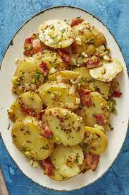
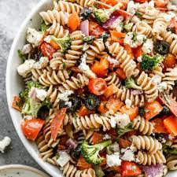
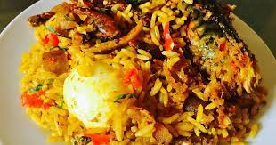
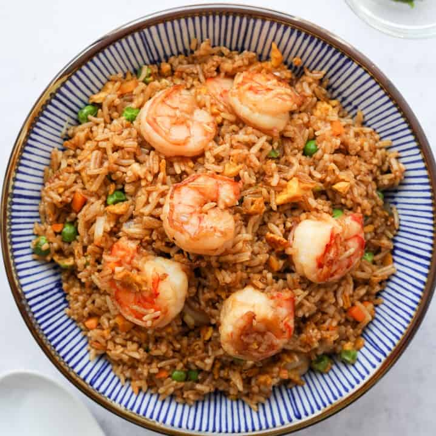

This is a potato dish recipe I came up with on a very hungrily-faithful
day. I was craving irish potatoes and I was tired of the regular
fried/boiled potatoes and eggs. My taste-buds wanted something
different, so I thought, why not make a potato dish with veggies! It
was an Ah-ha moment and I could already imagine how it would taste.
And trust me, it did taste delicious!
So, I have decided to give back to humanity by sharing my potato
dish recipe with y’all. Salivate!

Preparation time: 20mins
Cook time: 15mins
Feeds: 2 people
| Ingredients | Measurements |
|---|---|
| Irish potatoes | 10 small to medium pieces |
| Green Bell Peppers | 1 big size |
| Red Bell peppers | 1 big size |
| Yellow Bell peppers | 1 big size |
| Chilli Peppers | 5 pieces |
| Carrots | 2 big size |
| Sausages | 3 pieces |
| Eggs | 2 eggs |
| Oyster/Soy Sauce | 5 tablespoons |
| Grounded Pepper | 1 tablespoons |
| Vegetable oil | 5 tablespoons |
| Seasoning cubes | 1 cube |
| Salt | To taste |
Directions
- Peel your potatoes and dice into desired shape.
- Blanch your diced veggies and sausages by soaking in hot water for 2 mins, drain and set aside.
- Boil your dices potatoes till almost ready, drain of excess oil and set aside.
- Break your eggs into a plate, season, fry till almost ready, drain of excess oil.
- In a pan, heat up your vegetable oil or any preferred cooking oil on a low heat.
- Add your potato and stir fry for 5 minutes.
- Add your veggies and sausages, stir fry for another 5 minutes.
- Add your oyster/soy sauce, grounded pepper, seasoning cubes, salt and stir fry for another 5 minutes.
- Lastly, add your scrambled eggs, stir fry for two minutes.
- Voila! Food is ready!
You may also like

Fried Rice

Pasta Salad

Potato Porridge

Native Jollof Rice

Chinese Shrimp Rice
Yoghurt Parfait